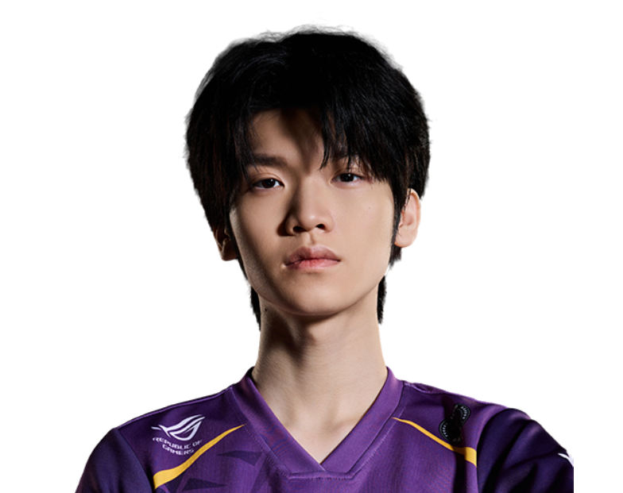

Nova Esports / 王庆川
cb.
ALL IN. EVERY ROUND.Sovacb / 王庆川
cb / NOVA
ONE NAME.EVERY ROUND.ALL IN.
王庆川，Nova Esports。
从每次选下英雄，到每次站上赛场。
cb / 赛场影像MOMENTS
MOMENTS
THAT MATTER.
cb.
Nova Esports
每一瞬间，都是比赛的一部分。
Riot Games / 官方赛场影像
cb / 职业英雄池
DIFFERENT AGENTS.
SAME PLAYER.
从最熟悉的英雄，看到每一种打法。猎枭
Sova.
20% 全英雄使用占比
41职业出场地图
218.4平均战斗评分 ACS
1.11击杀 / 死亡 K:D
641总击杀
11首杀
VLR 全时期职业数据 · 2026-11-02 快照 · 出场单位为地图，使用占比不是胜率。查看原始统计 ↗
cb / 比赛记录ONE PLAYER.
ONE PLAYER.
EVERY ROUND.
210职业地图
3,071总击杀
1.01全英雄 K/D
VCT 26: CN Threshold Week 2 ⋅
GF
NOVA / UR3 : 0+
VCT 26: CN Threshold Week 2 ⋅
SF
NOVA / AQ2 : 0+
VCT 26: CN Threshold Week 2 ⋅
QF
NOVA / AT2 : 1+
VCT 26: CN Threshold Week 1 ⋅
GF
NOVA / DRG0 : 3+
VCT 26: CN Threshold Week 1 ⋅
SF
NOVA / KBG2 : 0+
最近已收录系列赛；生涯总计由全英雄表求和，K/D 为总击杀除以总死亡。

下一位 / NOVA 阵容